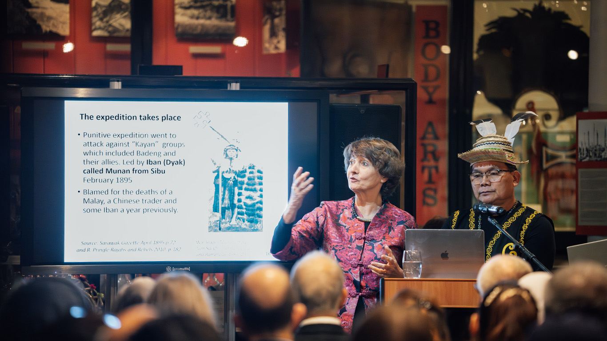
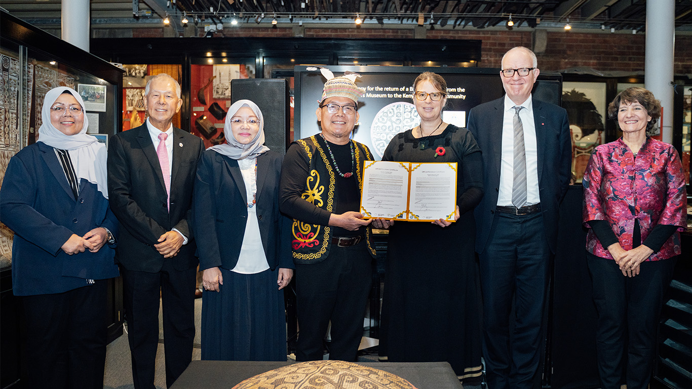
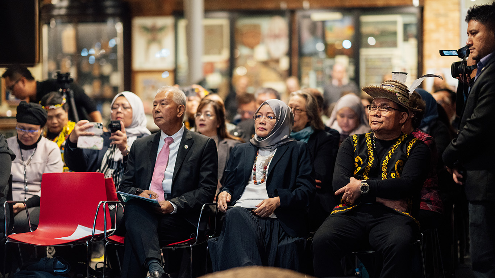
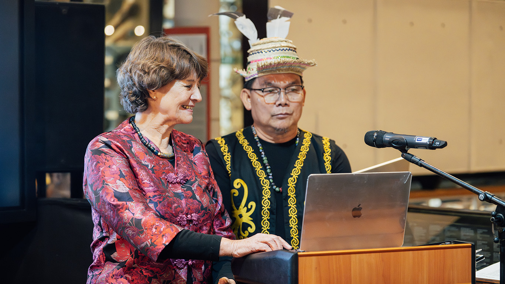

Historical Homecoming Gallery
Visual records capturing the presentation, celebration, and signing ceremony of the Badeng Sunhat's return.

Exhibition PreviewDr. Valerie Mashman
Sharing the extensive history, research framework, and decadelong rediscovery path of the Badeng Sunhat.

The ExchangeSymbolic Handover
Dr. Laura van Broekhoven hands over the sunhat back to KEBANA President Hilary Samah Tet in front of state observers.

Honorary GuestsSigning Ceremony
YB Datuk Sebastian Ting, Datu Sherrina, and KEBANA President Hilary Samah Tet witnessing the landmark contract signing.

Partnership"In This Together"
Dr. Valerie Mashman and KEBANA President Hilary Samah Tet collaborating together on the historical exhibit narratives.
The Repatriation Timeline
The Signing and Return Ceremony
In a monumental signing ceremony, the ownership title of the looted Kenyah Badeng sunhat was returned to KEBANA President Hilary Samah Tet by the Pitt Rivers Museum, Oxford. Witnessed by state representatives including Deputy Minister YB Datuk Sebastian Ting Chiew Yew and Director of the Sarawak Museum Nancy Jolhi, it was agreed that custody would reside with the Sarawak Museum to be preserved beautifully for generations to come.
From Sarawak to Oxford
The sunhat was part of a set of six objects (including another sunhat, two wooden bowls, and iron pot-stands) looted from Usun Apau during the government punitive expeditions in 1895/1896. Donated to the Sarawak Museum in 1903 by C.A. Bampfylde, one of the sunhats was subsequently taken by Second Rajah Charles Brooke to the UK in 1905 for display. Following his death, it was eventually acquired by the Pitt Rivers Museum in 1923.
The Rediscovery of the Artifact
During her term as a Research Fellow at the Pitt Rivers Museum, Datin Dr. Valerie Mashman (Associate Research Fellow at UNIMAS) painstakingly researched museum logs and catalog entries. She uncovered definitive archival evidence proving the sunhat was taken during the military punitive expeditions of the late 19th century, setting off the repatriation dialogue.
Why was a community object looted?
During the Brookes' reign, officers were often tasked with collecting cultural artifacts reflecting local customs for the Rajah's personal collection and state display. Military punitive operations against the up-river tribes (including Kayans, Madangs, and the Badeng community) in 1895 and 1896 unfortunately involved the confiscation of everyday cultural items as spoils of war. Today, some of these returned objects reside on the 4th floor of the Borneo Cultures Museum.
"This is a historic event not just for us as a community, but also for the state of Sarawak and for the University of Oxford. The return of this Badeng Sunhat gives our community visible evidence of the difficult and dangerous time when we were driven out of our homes in the highland plateau of the Usun Apau... It helps us to remember our history and imagine the struggles of our ancestors."
Academic Research & Documentation
Explore in-depth documentation, peer-reviewed research papers, and historical archives about the repatriated Sa'ung Seling sunhat.